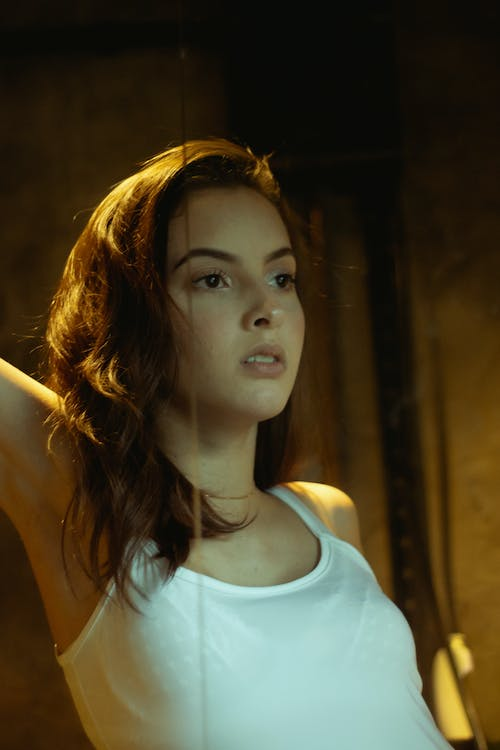
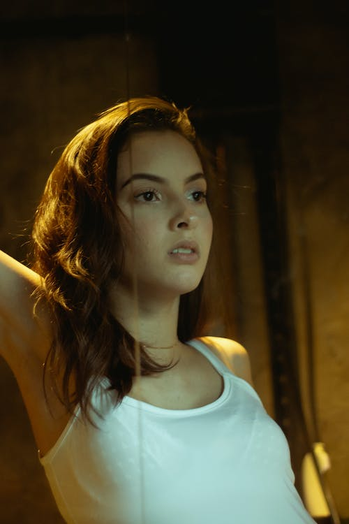

shots that will change your mind.
photography has become a big part of almost every element of our lives.
It become widespread and diverse but we know that this is still a real form of art and magic.
explore works


Carolina
28 october 2021This series is excellently showing that ordinary portrait photography still can be inspiring for you.
Check the shots of beautiful Caroline in hat with red and green lights.
 



Soul dance
17 september 2021Beautiful dance of Hanna in neon lights with retro effect. Pink lights, pretty women and sensuality.
Inspiring vibes and invisible beautiful soul on this shots.


80's vibes
1 september 2021Retro nostalgia can be sweet and sour at the same time. Christina helped us to make photos, that will give you this feelings.
Drop in past times with this collection of 80's styled photos.